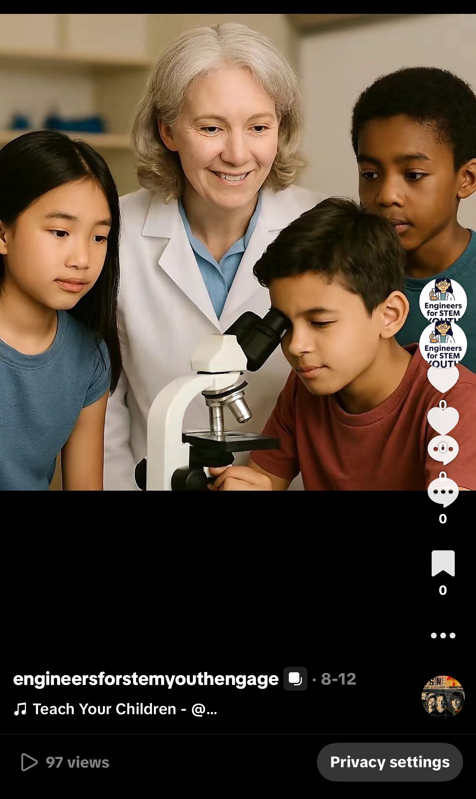
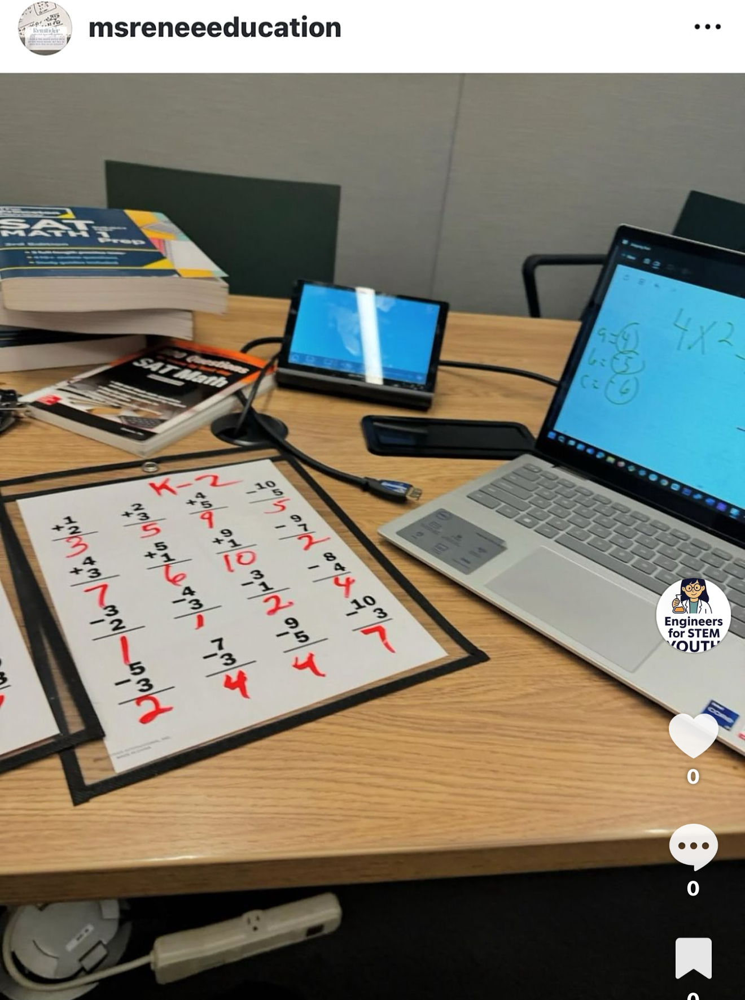

Library STEM Pop-Up

Sidewalk Music Outreach

School Visit – Math Challenge
Credential Claim Station

Faith-rooted, mobile-first STEM and music instruction under 508(c)(1)(A) nonprofit status
Engineers for STEM Youth delivers face-to-face instruction through mobile-first outreach. Our teaching modes include sidewalk STEM sessions, library pop-ups, school visits, and spontaneous music engineering. Every encounter is credentialed, documented, and aligned with our nonprofit mission.
Whether guiding a child through a math challenge or helping a student build music on the spot, we prioritize mastery, procedural clarity, and public access. Our instructional model adapts instantly to the moment—empowering learners wherever they are.
Library STEM Pop-Up
Sidewalk Music Outreach
School Visit – Math Challenge
Credential Claim Station